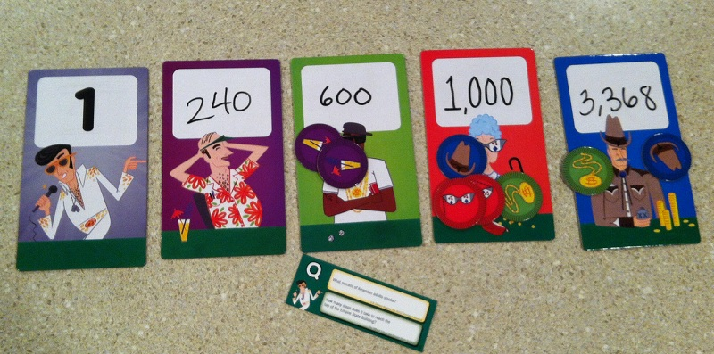

Wagering Your Wits
Blog Post #2
For the August 30 board game lab class time, a group of 4 people(Sean, Martin, AJ, and Vanky) and I decided to play 2 sessions of Wits and Wagers party edition. Wits and Wagers is a betting/wagering game is a fun game that can serve as a good ice breaker game to get people to feel more comfortable with each other. The five of us split off into 2 teams of 2 and one single player for all fourteen rounds of both sessions. Since all of the questions asked (such as: “how tall is the tallest tree in the world?”) weren’t necessarily basic knowledge, none of us knew the exact answers and didn’t always choose our own when it came time to bet on the most likely answers. It took us a little bit to get used to the game at first (as none of us have played it before), but it turned out to be a great time! All of the teams went back and forth between the choices as they were all revealed; this resulted into a lot of cheerful banter amongst everybody while learning new facts about stuff we’ve never really bothered to think about. As for our session report, none of the questions were written down, but readers can still follow the progressions of what each team answered, what they actually ended up choosing for bets, and what the results of each round was. Readers will also be able to find out the conclusion of our second round of Wits and Wagers party edition by reading the session report.


Our session report